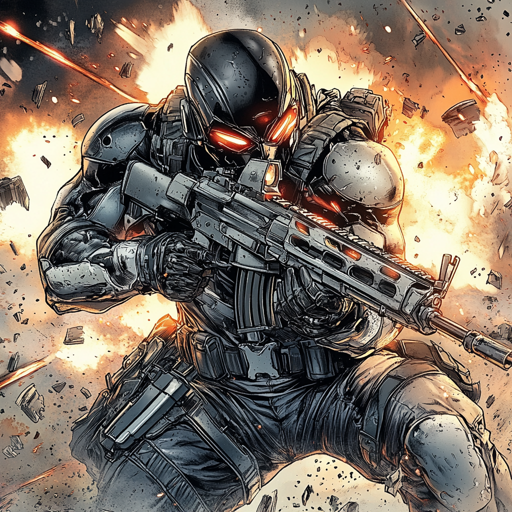

Reflex: The Ghost in the Crosshairs

Built for War
Nolan Graves wasn’t supposed to survive.
Born into a military family, he spent his childhood moving between bases, raised under the rigid discipline of a father who lived by the chain of command. Colonel Thomas Graves was a career soldier, a man who believed in structure, duty, and sacrifice. Nolan’s mother, Claire, had once been a battlefield medic, but after years of deployments and casualties, she left service to focus on raising her son. She tried to balance out the cold efficiency of his father, but it was hard to undo years of conditioning.
Nolan was expected to follow in his father’s footsteps. At eighteen, he enlisted in the Army, breezing through basic training before qualifying for special operations selection. He had the instincts, the reaction time, and the nerves for it—good enough to be molded into something useful. He spent years in the field, deployed in classified operations, earning a reputation as a marksman with near-supernatural reflexes.
But that wasn’t enough. The world was changing, and the military needed more than just elite soldiers.
They needed something faster.
The Reflex Initiative
Nolan was volunteered for an experimental combat enhancement
program known as Project Reflex—a Pentagon black project
buried under layers of classified funding. The goal: create
the next evolution of special forces operators through
neurological augmentation and enhanced battlefield
perception.
The scientists behind Reflex weren’t interested in brute force—they wanted untouchable soldiers, warriors who could move before the trigger was pulled, see the battlefield unfolding before it happened. Through a combination of experimental neuro-accelerants, synthetic neural tissue grafts, and deep-learning AI prediction modeling, the program retrained Nolan’s brain to process sensory input at hyper-accelerated speeds.
For a time, it worked. Reflex times cut in half. Reaction speeds bordered on precognition. In combat simulations, Nolan dodged bullets before they were fired, outmaneuvered opponents before they even realized he had moved. His aim sharpened, his ability to anticipate enemy fire became uncanny. He could read body language in milliseconds, predict movement before it happened, and evade even the most chaotic engagements with ghost-like precision.
But the human mind wasn’t meant to process the future before it happened.
The overstimulation began to take its toll—split-second images flashing before his eyes, the sensation of events unfolding before they occurred. At first, it was just battlefield awareness, a heightened sense of danger. Then came glimpses of things that hadn’t happened yet. A grenade rolling into the room seconds before it was thrown. The sensation of a bullet grazing his skin before the enemy had even pulled the trigger.
It became too much.
By the time Project Reflex was shut down, its test subjects were either dead or irreversibly damaged—except for Nolan. He was the only one who survived, though the military brass wouldn’t call it that. The headaches, the temporal drift, the constant blur between action and reaction—he wasn’t a soldier anymore. He was a liability. The perfect weapon with no off switch.
Rather than risk exposing the project, the military cut him loose. An honorable discharge. No records. No recognition. Just a name on a classified report buried in the archives.
Nowhere to Run
Disoriented, burned out, and haunted by the fractured
glimpses of the future, Nolan spent the next year living
like a ghost—drifting between cheap motels, looking over his
shoulder, never staying in one place too long. He wasn’t
sure if the government still had tabs on him, but it didn’t
matter. He couldn’t trust himself.
The world didn’t move right anymore. Conversations felt a second too slow. Fights were over before they began. He could see the angles, the outcomes, the mistakes before they happened, but it didn’t feel like skill anymore. It felt like a curse.
That’s when the Boston Avengers Academy found him.
The Academy's Offer
BAA had been tracking unusual ex-military disappearances,
searching for recruits with unique circumstances. A lead
from a former operative in the intelligence community
pointed them to Nolan—a washed-up special forces soldier
with no records, no history, and an unexplainable ability to
avoid being hit in a fight.
They didn’t send recruiters. They sent Ironclad.
Nolan didn’t care about the pitch. He didn’t want to be a hero. But BAA wasn’t offering heroism—they were offering control. A way to slow down. A way to use what was in his head without falling apart from it.
He agreed, but with conditions. No tests. No doctors trying to "fix" him. No experiments. He was done being a lab rat.
A Ghost on the Battlefield
At BAA, Nolan was placed on Team Gamma, a squad known for
its mix of raw talent and unpredictable elements. He was an
outsider at first, keeping his distance, reluctant to trust
anyone. But combat training changed that.
On the field, he was impossible to hit. Fights ended before they began, enemies locked into patterns he had already played out in his head. His ability to read the battlefield and redirect enemy fire made him invaluable to the team.
Where others charged in, he moved like a ghost, appearing in the perfect position at the perfect time, snapping off precision shots before an enemy even knew where he was.
They started calling him Reflex, and the name stuck.
The Man He Used to Be
Outside of combat, Nolan still struggles. The glimpses of
the future never fully stop—a second ahead, a moment before,
always nagging at the edges of his awareness. Sleep is
difficult. Crowds are worse. His mind still processes
threats before they exist, and that makes it hard to be a
person, not just a weapon.
BAA gives him something he hasn’t had in years—stability. A team that doesn’t just see him as an experiment gone wrong, but as a man trying to keep himself together. He doesn’t know if he’ll ever be a hero, but at least here, he isn’t alone.
And if the past has taught him anything, it’s that he’ll always see danger coming—long before it knows he’s there.